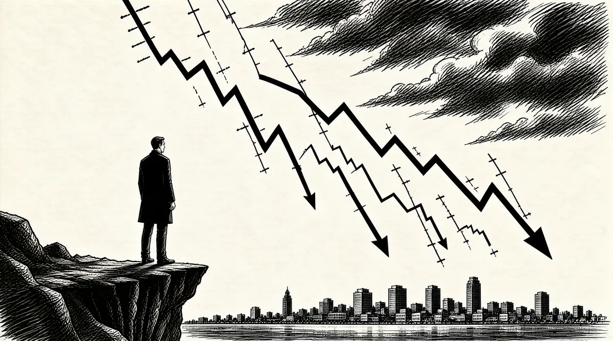

第4章 沃伦，你怎么了？

巴菲特的300亿美元财产几乎全部（99%）投资于伯克希尔–哈撒韦的股票。他在太阳谷曾谈到过，市场称重器比投票器更重要。但正是投票器决定了他演讲之后的股票价格。人们之所以关注他，是因为他富有。因此，当他预期市场可能令投资者失望上17年的时候，1他是站在悬崖边上，他很清楚这点。如果他错了，他不仅会成为太阳谷的笑柄，而且在全球富豪榜上，他的排名也会下降。巴菲特可是很关注这个排名的。
整个20世纪90年代末期，BRK（伯克希尔–哈撒韦的股票代码）令他名声大噪，因为BRK的表现远远超过市场，到1998年6月，每股已达80900美元。伯克希尔–哈撒韦的一股股票就可以买一套产权独立的小型公寓，这在美国公司中是绝无仅有的。对巴菲特而言，公司股价是衡量其成功的简易标志。从巴菲特以7.5美元每股的价格买下BRK的那天起，BRK就一路上升。即使股票市场在20世纪90年代末震荡不已，但是购买BRK并坚持持有的投资人获利不菲，一直到1999年。
但是现在，巴菲特发现他自己站在一类不受欢迎的股票的下沉平台上，看着“T&T”类（信息技术和电信行业）股票上涨。1999年8月，BRK跌到65000美元一股。对一家成熟、每年为投资者赚4亿美元的大型企业而言，应该支付多少钱呢？对一家新生、亏钱的小型企业，又应该支付什么价格呢？
•玩具反斗城公司（Toys“R”Us）每年赚4亿美元，年销售额110亿美元。
•eToys公司每年亏1.23亿美元，销售额只有1亿美元。2
市场投票器显示eToys公司价值49亿美元，而玩具反斗城价值10亿美元，低于前者。这其中的假设是eToys公司将通过互联网冲击玩具反斗城。3
悬于市场上空的疑云是个时间问题。专家们都预期灾难可能在1999年12月31日午夜发生，因为全球的计算机程序不能解决“2”开头的日期问题。害怕市场产生恐慌，美联储开始迅速增加货币供应量以解决现金短缺问题，以防全美的ATM机（自动柜员机）被冻结。因此，经过美联储的增压推动，太阳谷年会之后不久，市场急速上升，就像7月4日美国国庆节的烟花。如果你1月份在纳斯达克市场投资了1美元，那你下的赌注现在就是1.25美元，而投在BRK上的只值0.8美元。到12月，道琼斯工业平均指数年底收盘时上涨了25%，而纳斯达克则突破了4000点大关，不可思议地上涨了86%，BRK下跌到56100美元每股。仅仅几个月时间，BRK过去几年的领先地位就被大大动摇了。
在一年多的时间里，金融评论嘲笑巴菲特已经是明日黄花，是过去完成时。如今，在新千年即将来临之时，巴菲特成为《巴伦周刊》的封面人物，配的大标题是：“沃伦，你怎么了？”封面文章写道，巴菲特狠狠地摔了一个跟头。他面临着从未曾遭遇的负面新闻报道。他反复重述：“我知道市场会变化，我只是不知道变化的时间。”4巴菲特大受刺激的神经让他迫切地想要反击，不过最终，他只字未提，未作任何回应。
到1999年年底的时候，众多追随巴菲特风格的长期价值投资者要么结束了自己的公司或业务，要么放弃了“价值投资”，买了IT类股票。但是，巴菲特没有这么做。被他称为“内部记分卡”的东西——在进行金融投资决策时，他骨子里具有的坚韧——让他避免了摇摆不定。
我觉得我处境不妙。西斯廷教堂就在那里，我在远处作画。我喜欢人们说：“哇，那幅画真是好看极了！”不过，这是我的画，如果有人问我，“为什么你不多用点儿红色代替蓝色”，那么再见，这是我的画。我不在乎画的卖价。画本身不会受卖价影响，这是它最了不起的一点。5
人们行事的一大问题在于，他们是拥有“内部记分卡”还是“外部记分卡”。如果内部记分卡能令你感到满意，它将非常有用。我经常这么做。我想说：“听着，你想做世间最伟大的情人，却令大家认为你是世上最差劲的情人。或者，你想做世上最差劲的情人，但却让人们认为你是世间最伟大的情人。这两者之间，你作何选择？”这是个有趣的问题。
还有另外一件有趣的事。如果全世界的人无视你的成果，那么，你是想被当作世间最伟大，但实际上却是全世界最糟糕的投资者，还是愿意被认为是全世界最无能，而实际上却是最优秀的投资者？
我认为，这取决于人们年幼的时候父母的关注重点。如果父母忽视、抹杀你真实的行为，重视的是全世界怎么看待你，那么，你最终将使用“外部记分卡”。而我的父亲——他是个百分之百的“内部记分卡”使用者。
他是一位真正不随大流的独行者，但是，他并不是刻意为之。他只是不在乎他人的评价。我的父亲教会我应该怎样生活。我从未见过任何人能像他一样。